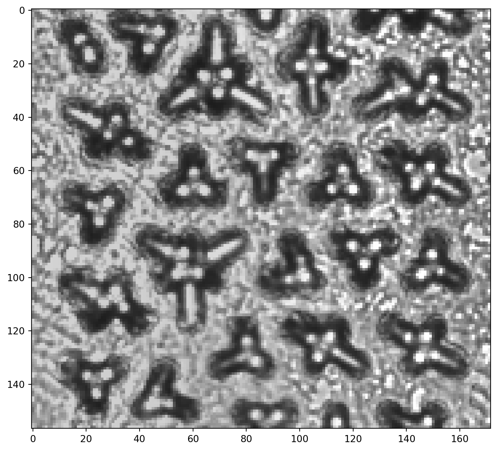
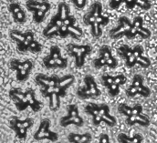
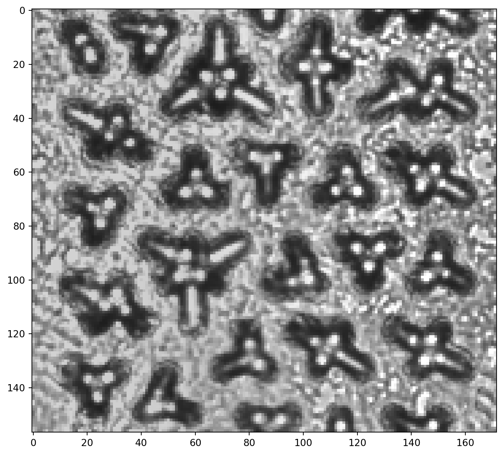
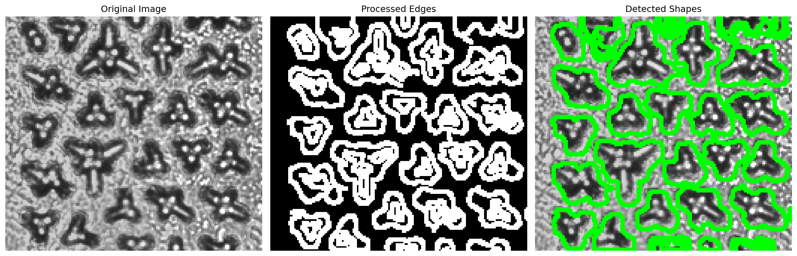
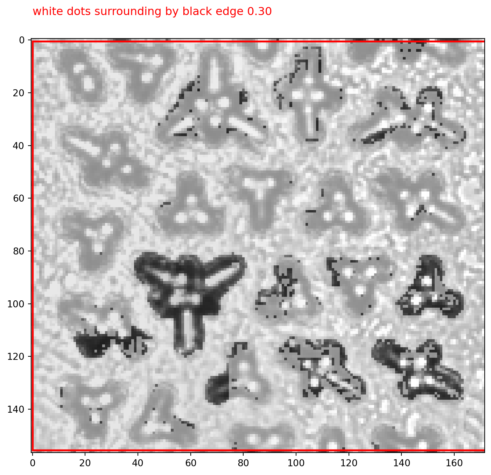

from PIL import Image
import matplotlib.pyplot as plt
# 加载图像
image_path = 'example/images/microfluidic-chip.jpg'
image = Image.open(image_path)
# 在 Notebook 中显示图像
plt.figure(figsize=(12, 8))
plt.imshow(image)
plt.axis('on') # 显示坐标轴
plt.show()
现在有一个微流控芯片的显微图像，需要检测其中的物体。这个物体是圆形的、白色的圆点，有黑色的边缘，一般会形成放射状的图案。

from PIL import Image
import matplotlib.pyplot as plt
# 加载图像
image_path = 'example/images/microfluidic-chip.jpg'
image = Image.open(image_path)
# 在 Notebook 中显示图像
plt.figure(figsize=(12, 8))
plt.imshow(image)
plt.axis('on') # 显示坐标轴
plt.show()
这段代码主要实现了图像的预处理和可视化。
首先，使用 OpenCV 库读取图像并将其转换为灰度图，这样可以减少计算量并简化后续处理。
然后，应用高斯模糊来减少图像中的噪声，这有助于提高后续边缘检测的准确性。高斯模糊使用 9x9 的核，可以有效平滑图像而不会过度模糊重要特征。
最后，使用 Matplotlib 库创建一个包含两个子图的图形，分别显示原始灰度图像和经过高斯模糊处理后的图像，以便直观比较处理效果。这个预处理步骤为后续的物体检测奠定了基础。
import cv2
import numpy as np
import matplotlib.pyplot as plt
# 读取图像并转换为灰度图
image = cv2.imread(image_path)
gray = cv2.cvtColor(image, cv2.COLOR_BGR2GRAY)
# 应用高斯模糊以减少噪声
blurred = cv2.GaussianBlur(gray, (9, 9), 0)
# 显示模糊后的图像
plt.figure(figsize=(10, 5))
plt.subplot(1, 2, 1)
plt.title("Original Image")
plt.imshow(cv2.cvtColor(gray, cv2.COLOR_BGR2RGB))
plt.axis('off')
plt.subplot(1, 2, 2)
plt.title("Gaussian Blurred Image")
plt.imshow(cv2.cvtColor(blurred, cv2.COLOR_BGR2RGB))
plt.axis('off')
plt.tight_layout()
plt.show()
Canny 边缘检测是一种广泛使用的图像处理技术，用于识别图像中的边缘。它由 John F. Canny 在 1986 年提出，被认为是一种非常有效的边缘检测算法。Canny 边缘检测的主要步骤包括：
高斯滤波： 首先对图像进行高斯模糊，以减少噪声。这一步已经在前面的代码中完成。
计算图像梯度： 使用 Sobel 算子计算图像在 x 和 y 方向的梯度。这可以找出图像中亮度变化最大的区域。
非极大值抑制： 沿梯度方向，比较像素的梯度幅值。如果不是局部最大值，则将其抑制（设为 0）。这一步可以细化边缘。
双阈值处理： 使用两个阈值（高阈值和低阈值）来区分强边缘、弱边缘和非边缘像素。
边缘跟踪： 最后，通过滞后阈值法来跟踪边缘。强边缘像素被立即标记为边缘，而弱边缘像素只有在与强边缘像素相连时才被保留。
Canny 边缘检测的优点包括： - 能够检测到弱边缘 - 对噪声具有较强的鲁棒性 - 能够得到较为精确的边缘定位
在 OpenCV 中，cv2.Canny() 函数封装了这些步骤，使得边缘检测变得简单易用。在接下来的代码中，我们将使用这个函数来进行边缘检测。
# 使用Canny边缘检测
edges = cv2.Canny(blurred, 100, 200)
# 定义形态学操作的核
kernel = np.ones((2,2), np.uint8)
# 应用闭运算来填充边缘之间的小间隙
closed_edges = cv2.morphologyEx(edges, cv2.MORPH_CLOSE, kernel, iterations=2)
# 应用膨胀操作来进一步加粗边缘
dilated_edges = cv2.dilate(closed_edges, kernel, iterations=2)
# 寻找轮廓
contours, _ = cv2.findContours(dilated_edges, cv2.RETR_EXTERNAL, cv2.CHAIN_APPROX_SIMPLE)
# 在原图上绘制轮廓
result = image.copy()
cv2.drawContours(result, contours, -1, (0, 255, 0), 2)
# 显示结果
plt.figure(figsize=(15, 5))
plt.subplot(1, 3, 1)
plt.title("Original Image")
plt.imshow(cv2.cvtColor(image, cv2.COLOR_BGR2RGB))
plt.axis('off')
plt.subplot(1, 3, 2)
plt.title("Processed Edges")
plt.imshow(dilated_edges, cmap='gray')
plt.axis('off')
plt.subplot(1, 3, 3)
plt.title("Detected Shapes")
plt.imshow(cv2.cvtColor(result, cv2.COLOR_BGR2RGB))
plt.axis('off')
plt.tight_layout()
plt.show()
# 打印检测到的轮廓数量
print(f"Detected contours: {len(contours)}")
Detected contours: 22在这个部分,我们将使用 GroundingDino 模型来检测微流控芯片中的白点。GroundingDino 是一个强大的目标检测模型,可以根据文本提示来定位和分割图像中的对象。以下是代码的主要步骤和功能:
这段代码展示了如何使用高级目标检测模型来识别微流控芯片中的特定结构,并以可视化的方式呈现结果。
import os
from dds_cloudapi_sdk import Config
from dds_cloudapi_sdk import Client
from dds_cloudapi_sdk import DetectionTask
from dds_cloudapi_sdk import TextPrompt
from dds_cloudapi_sdk import DetectionModel
from dds_cloudapi_sdk import DetectionTarget
token = os.getenv("DINO_API_KEY")
config = Config(token)
client = Client(config)
image_path = "example/images/microfluidic-chip.jpg"
image_url = client.upload_file(image_path)
prompt = [TextPrompt(text="white dots surrounding by black edge")]
task = DetectionTask(
image_url=image_url,
prompts=prompt,
targets=[DetectionTarget.Mask, DetectionTarget.BBox], # detect both bbox and mask
model=DetectionModel.GDino1_5_Pro, # detect with GroundingDino-1.5-Pro model
)
task = DetectionTask(
image_url=image_url,
prompts=prompt,
targets=[DetectionTarget.Mask, DetectionTarget.BBox],
model=DetectionModel.GDino1_5_Pro,
)
client.run_task(task)
result = task.result # 显示检测结果
import matplotlib.pyplot as plt
from PIL import Image, ImageDraw
import matplotlib.patches as patches
image = Image.open(image_path)
objects = result.objects # the list of detected objects
for idx, obj in enumerate(objects):
# 将RLE格式转换为RGBA图像
mask_image = task.rle2rgba(obj.mask)
# 创建一个图像副本用于绘制
fig, ax = plt.subplots(1, 1, figsize=(12, 8))
ax.imshow(image)
ax.imshow(mask_image, alpha=0.5)
# 在图像上绘制掩码
bbox = obj.bbox
# 创建一个矩形框，参数为 (左上角 x, 左上角 y, 宽度, 高度)
rect = patches.Rectangle(
(bbox[0], bbox[1]), # 左上角坐标
bbox[2] - bbox[0], # 宽度
bbox[3] - bbox[1], # 高度
linewidth=2, # 边框宽度
edgecolor='red', # 边框颜色
facecolor='none' # 填充颜色
)
ax.add_patch(rect)
# 在图像上添加类别和分数
text = f"{obj.category} {obj.score:.2f}"
ax.text(bbox[0],
bbox[1] - 10,
text,
color='red',
fontsize=12)
# 显示图像
# plt.axis('off') # 不显示坐标轴
plt.show()